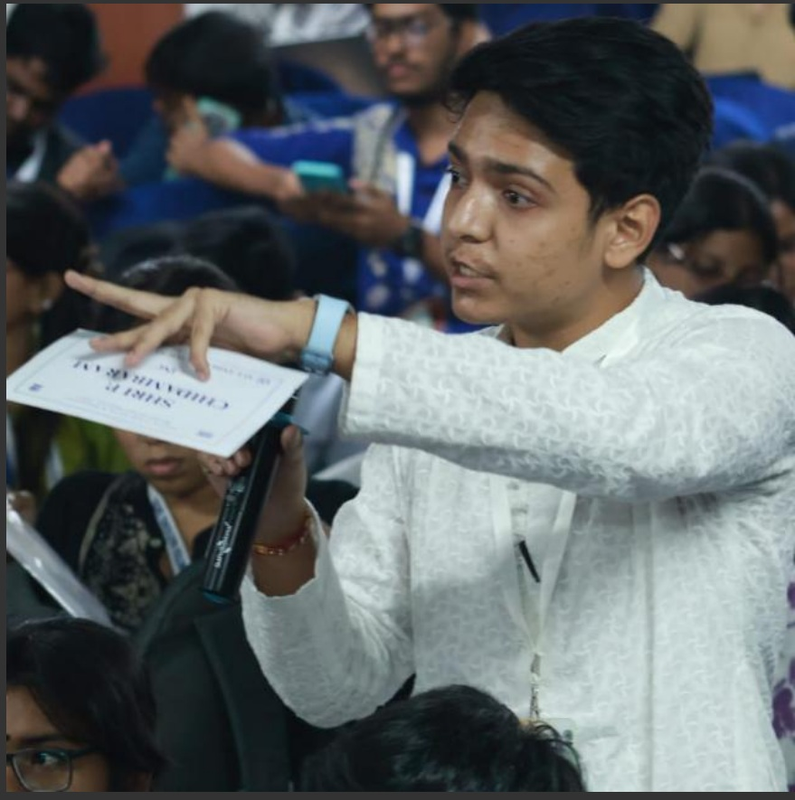

Deepak Das Biswas is a young researcher and writer based in Kolkata. Passionate about history, geopolitics, and national security, he combines analytical thinking with thorough research to uncover the hidden truths behind global conflicts.
His writings primarily focus on terrorism, intelligence operations, and the complex political dynamics shaping South Asia.